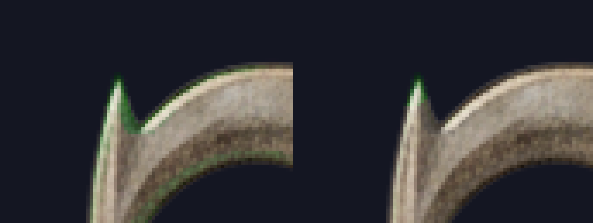
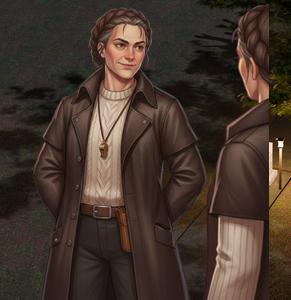
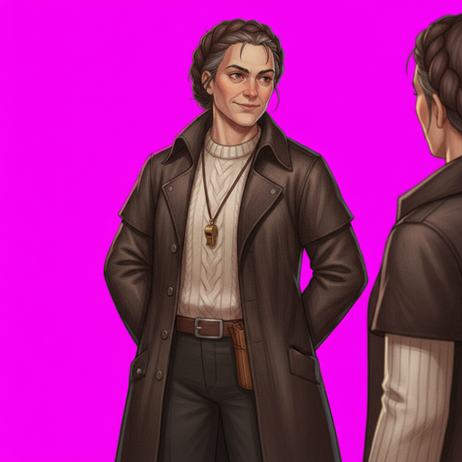
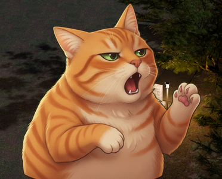
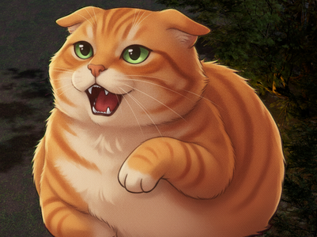
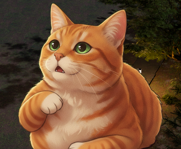
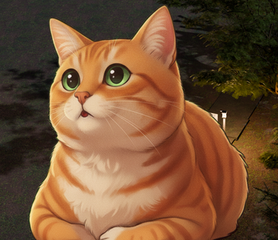
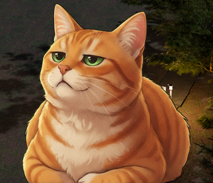

2026-08-09. The cast stood at 114/120 after the chroma lane. ONE of the six was a pipeline defect and is CLOSED (weaponsmith); the other five are all DRAWING defects or a metric measuring a drawing that is right, and are refused with numbers. Every failing character had studio art on disk to re-mat from, and it was checked first — that is what made four of the five diagnoses possible without spending a single generation.
| plate | gate says | mechanism | studio art? | verdict |
|---|---|---|---|---|
| weaponsmith/cutin | chroma_rim 0.00031 | THE UN-PREMULTIPLY, not the despill: alpha is a normalised distance whose denominator is a local maximum, so a dark pixel in a bright figure's notch reads 60–70% covered when it is solid paint, and 33% of the key gets subtracted out of it. Source pixels are neutral khaki (_mg −1.5) and land at _mg −73…−98. | yes, already shipped from it | FIXED — the despill share may now go negative, floored at the drawn colour. Bar unmoved. |
| odessa/cutin, -grave, -warm | halo +30.9 / +40.1 / +35.5 | Salvage paper halo. The studio set fixes it (rest +12.6), but the FLOOR requires warm, and no crop of the warm drawing clears the halo gate: swept 12 waist cuts from 0.40 to 0.84 of the figure, minimum +21.4, and +24.6 at the cut that matches her base's head_frac. Its drawing also holds a second figure. | yes, 7 plates | REFUSED — would lose warm |
| tally/cutin | edge_noise 0.153 | Salvage paper feather — and 90–96% of the off-band soft pixels are OUTSIDE the figure, which is exactly the defect the metric was written for. The studio art is six times cleaner and is drawn as a BUST. | yes, 6 plates | REFUSED — both sources fail, one on the matte and one on the framing |
| mochi/cutin | halo +37.5 | Salvage paper glow. The studio re-mat kills it (−101) and fails edge_noise instead — on the cat's FUR: 98–100% of its off-band soft pixels are INSIDE the figure at alpha 0.73–0.95, i.e. the opposite of "a partially-keyed background", which is the metric's own words for what it counts. Widening KEY_BAND 2→3→4→5 makes it 0.161→0.335→0.444→0.520, so the soft alpha is the drawing and not a truncation artefact. | yes, 5 plates | REFUSED — see the proposal below |
edge_noise counts soft alpha far from the cut, inside the figure and outside it alike, but its own docstring defines the defect as "a partially-keyed background (a halo, a glow, a gradient the key could not follow)" — which is OUTSIDE by definition. Split the term and the two populations separate far better than they do today: salvage plates whose defect really is a paper halo run in_share 0.04–0.23 (tally/cutin outside-only 0.143, still refused); clean studio plates run 0.000–0.007; mochi's fur runs 0.000–0.003. Calibration, on all 65 salvage incumbents RE-DERIVED from the bust/expr art still on disk: the full gate refuses 15/65 today and 13/65 under the variant — it costs exactly two refusals, both maren salvage plates long superseded by her studio suite. It would take mochi to green and would not rescue tally. Left unshipped on purpose: it is a change to a calibrated primary gate made in the same breath as it passes a character, and that is a decision for the user, not for the lane that wants the plate. (Related, and worth recording: the header's "43 of the 62 incumbents fail it" NO LONGER REPRODUCES — the same salvage path re-derived today is refused on 15 of 65, because the salvage matte has been improved several times since that sentence was written.)
The signed-share fix landed. chroma_rim 0.00031 → 0.00021 against a 0.0003 bar that did NOT move.
The gate counted SIX firing pixels. The picture is a green line down the whole blade edge and filling the notch: chroma_rim only counts shell pixels above anti > 72, so most of this fringe was under its own threshold. A defect counter that only counts its own threshold crossings understates the defect it is counting.

Salvage mattes. halo +30.9 / +35.5 / +40.1 against a +18 gate — the toned paper surviving in the feather, plainly visible as a cream fringe along the coat edge and the hair over a night plate.
Studio art, matted through the flat-key path. rest / proud / stern / worried are CLEAN and pass everything. grave and surprised were drawn FULL LENGTH (head_frac 0.149 / 0.166 against a 0.18 floor). warm contains a SECOND FIGURE, cropped by the frame — speckle 0.2805, edge_touch 0.4936.

Two figures in one portrait plate. The matte is right; the drawing is not.

Salvage. cutin fails edge_noise 0.153; the three moods sit at 0.094–0.111 against a 0.120 bar, i.e. the whole set is marginal on the same paper feather. head_frac 0.343–0.351 — ALREADY outside the 0.18–0.30 band, because the framing gate is applied at promotion and never retroactively.
Six clean mattes — edge_noise 0.017–0.028, six times better — and every one refused for framing: the model drew a BUST (head_frac 0.394–0.408, against Mara's verified head-and-shoulders bust at 0.328). Internally consistent (spread 0.014, tighter than Vesper's 0.033); it is the wrong framing, consistently.
Salvage. halo +37.5 — the paper glow.
Studio art: halo +37.5 → −101 (the glow is gone), speckle 0.0022 → 0.0000, four extra moods — and every plate refused on edge_noise 0.125–0.161.




